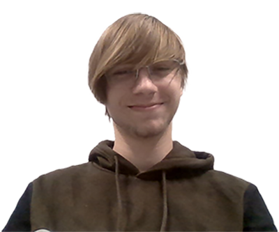

Over Mij
Om wat eerder was gezegd te herhalen: Hallo! Ik ben Abel van der Steen, ben 17 jaar oud, kom uit Nederland en ben een tweedejaars Sofware Development student. Games, technologie en websites zijn altijd een levenslange passie van mij geweest, en ik heb heel erg zin om eindelijk in de industrie te kunnen werken!
Wat voor Developer ben ik?
Terwijl ik wel ervaring heb met front-end web development en een klein beetje met back-end, mijn grootste kracht ligt op het moment in
C# / Unity. Natuurlijk is web development ook nog een sterkte van mij! (Dat is toch wat de mensen willen?) Een ding dat je mij waarschijnlijk
veg van moet houden is back-end web development... Ik heb een slechte relatie met PHP.
Kwa Game Development, de grootste rede dat ik deze opleiding ben begonnen is omdat ik de kennis wou hebben om mijn dream game te maken.
Jammer genoeg heb ik nog niet genoeg ideeën voor zo'n spel, en ik heb nog veel te leren voordat ik überhaupt kan denken
aan het beginnen van zo'n project. Ik ben klaar om te leren, één stap tegelijk!
Naast al het code gedoe vind ik dat ik een best creatief persoon ben: ik kan tekenen, een paar instrumenten spelen en muziek produceren!
Meer komt daar later nog over, maar het is natuurlijk niet de focus van deze website ;)
Mijn Projecten

Gemaakt met Unity (C#) + Premiere Pro en Photoshop voor de assets.
Novaflow is een Guitar Hero / Friday Night Funkin' geïnspireerde ritme spel gemaakt door mijzelf voor het SintLucas SHINE project. Het spel daagde mij uit in beide de code en in Unity zelf, en ik heb er veel van geleerd. Het doel van het SHINE project was om je voortgang over de loop van het jaar te laten zien, en ik denk dat ik dat doel zeker heb bereikt met Novaflow.

Gemaakt met Unity (C#)
Voor het SintLucas Ambitie Project probeerde ik een JRPG-achtige turn-based battle systeem te maken. Om eerlijk te zijn: ik had te veel hooi op de vork genomen! Ik had veel fouten gemaakt in het plannen én programmeren, waardoor ik iets uiteindelijk had gemaakt waar ik niet echt trots op ben, maar ik heb er veel van geleerd!
Gemaakt met Photoshop, Krita and FL Studio.
-